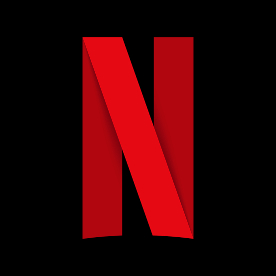
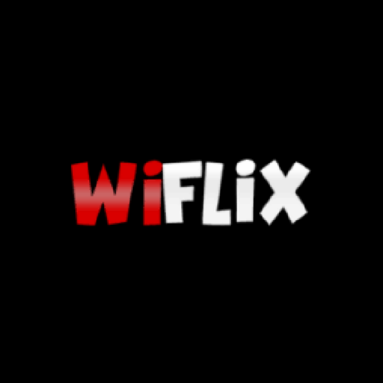
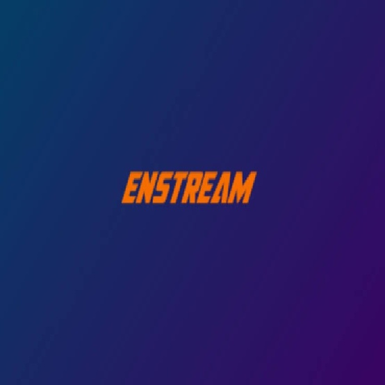
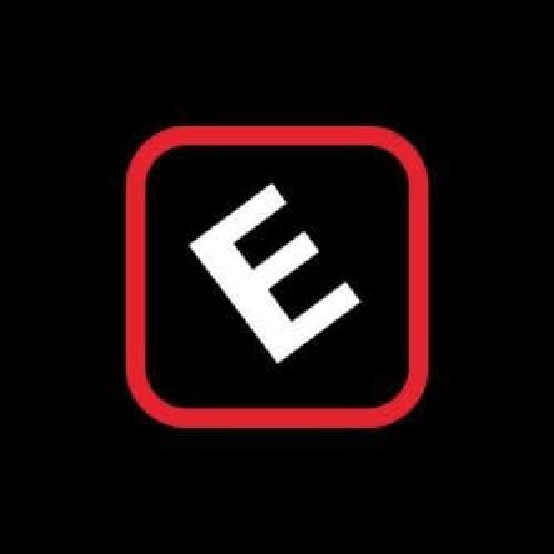
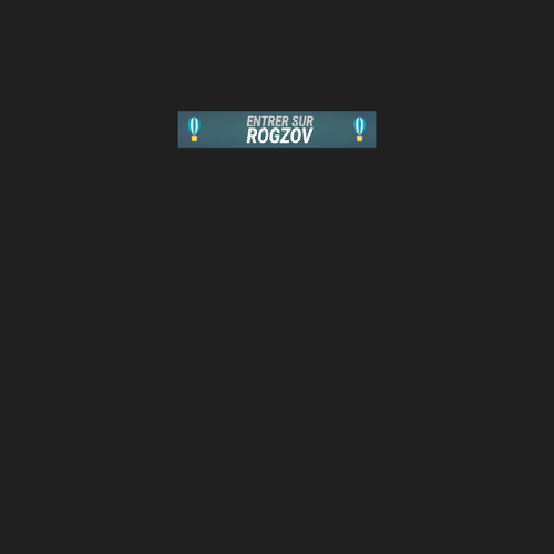
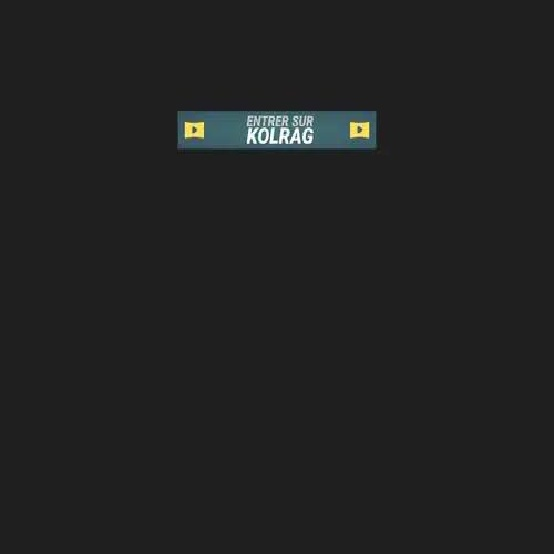
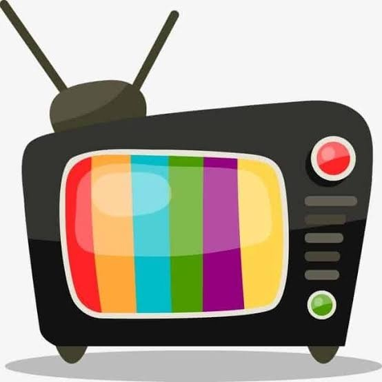
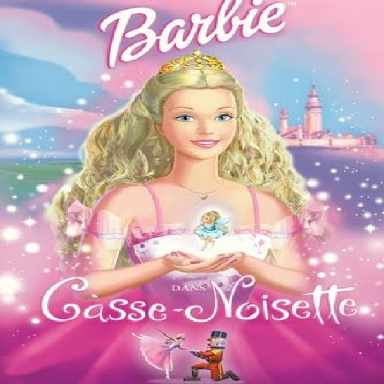
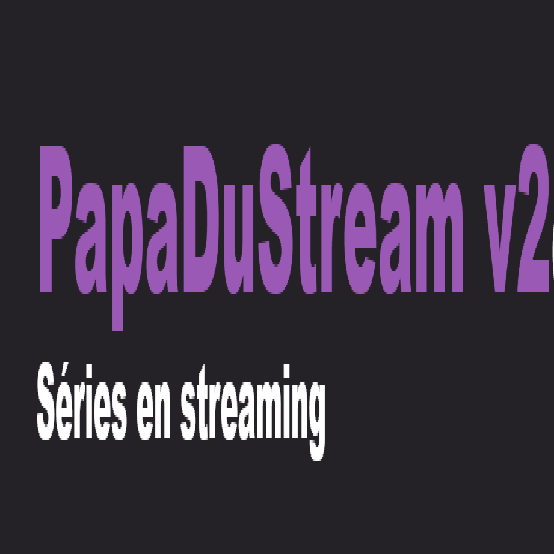

Bienvenue dans la section Streaming
Bienvenue sur notre espace dédié aux passionnés de streaming ! Ici, je vous présente avec enthousiasme les différentes catégories de sites de streaming, que ce soit pour des films, des séries, des animés ou des telenovelas. Vous trouverez ici des sites spécialement sélectionnés pour répondre à vos envies. Prenez le temps de découvrir ces trésors du streaming, et surtout, revenez pour explorer toujours plus ! Un monde infini de divertissement vous attend, et je suis là pour vous le faire découvrir.
Alors, que cherchez-vous ?

- Les sites de streaming populaires en Voir
- Les sites de streaming GRATUITS en Voir
- Les sites de streaming pour films GRATUITS en Voir
- Les sites de streaming pour séries GRATUITS en Voir
- Les sites de streaming pour animés GRATUITS en Voir
- Autres plateformes de streaming GRATUITS en Voir
- Petits bonus : Chaines pour telenovelas GRATUITS en Voir
Les sites de streaming populaires en
Netflix
Netflix est un service de streaming qui propose un vaste catalogue de films, séries et documentaires à la demande, avec des options de visionnage en haute définition et plusieurs plans d'abonnement.
Prime Video
Prime Video est un service de streaming de vidéos proposant des films, séries et contenus originaux avec options de téléchargement, accessible via abonnement à Amazon Prime.
Apple TV+
Apple TV+ est un service de streaming proposant des séries originales, des films et des documentaires, accessible par abonnement et disponible sur plusieurs appareils Apple et autres plateformes.
Disney+
Disney+ est un service de streaming offrant un catalogue de films, séries et contenus originaux de Disney, Pixar, Marvel, Star Wars et National Geographic, accessible par abonnement.
Canal+
Canal+ est un service de télévision par abonnement offrant des films, séries, sports, et contenus originaux, disponible en streaming et à la télévision.
HBO
HBO est un service de streaming et de télévision par abonnement offrant des séries originales, des films, et des documentaires exclusifs, avec des options de visionnage en haute définition.
Hulu
Hulu est un service de streaming proposant des séries TV, des films, et des contenus originaux, avec des options de visionnage en direct et à la demande, accessible par abonnement.
Crunchyroll
Crunchyroll est un service de streaming spécialisé dans les anime, offrant des séries, des films et des mangas en streaming avec des options de sous-titrage et de doublage.
Les sites de streaming GRATUITS en
Wiflix-Catalogue
Wiflix-catalogue est un site qui offre un accès à un large choix de films et séries en streaming gratuit, souvent avec des liens vers différentes sources de visionnage.
Streamdeouf
Streamdeouf est un site de streaming gratuit qui propose une large sélection de films et de séries, souvent avec plusieurs options de visionnage.
Sadisflix
Sadisflix est un site de streaming gratuit qui propose des films et des séries en streaming, souvent avec plusieurs sources pour chaque titre.
Enstream
Enstream est un site de streaming qui propose des films et des séries en accès gratuit avec plusieurs options de visionnage.
Cpasfo
Cpasfo est un site de streaming gratuit offrant une vaste sélection de films et de séries, avec plusieurs options de visionnage.
Empirestreaming
EmpireStreaming est un site de streaming gratuit qui propose une large gamme de films et de séries, souvent avec plusieurs liens pour chaque titre.
Coflix
Coflix est un site de streaming gratuit offrant des films et des séries, avec plusieurs options de visionnage disponibles pour chaque contenu.
Cpasmal
Cpasmal est un site de streaming gratuit proposant des films et des séries, avec plusieurs options de visionnage pour chaque titre.
01Streaming
01streaming est un site de streaming gratuit offrant une large sélection de films et de séries, souvent avec plusieurs sources de visionnage.
Filmoflix
Filmoflix est un site de streaming gratuit qui propose une large gamme de films et séries, avec plusieurs options de visionnage pour chaque titre.
Wookafr
Wookafr est un site de streaming gratuit offrant une sélection de films et séries, avec plusieurs options de visionnage disponibles.
Streamizseries
Streamizseries est un site de streaming gratuit spécialisé dans les films et séries, proposant plusieurs options de visionnage pour chaque titre.
Les sites de streaming pour films GRATUITS en
Hds-streaming
HDS-streaming est un site de streaming gratuit qui propose une vaste sélection de films, avec plusieurs options de visionnage disponibles.
Rogzov
Rogzov est un site de streaming gratuit offrant des films en HD, souvent avec plusieurs liens de visionnage pour chaque titre.
Kolrag
Kolrag est un site miroir de Rogzov, offrant des films HD en streaming gratuit, avec plusieurs options de visionnage.
Voircartoon
VoirCartoon est un site de streaming gratuit spécialisé dans les dessins animés et les séries animées, avec plusieurs options de visionnage.
Filmsdeprincesse
Filmsdeprincesse est un site de streaming gratuit spécialisé dans les films et dessins animés sur les princesses, avec plusieurs options de visionnage.
Dessins-anime
Dessins-Animé est un site de streaming gratuit qui propose une large sélection de dessins animés, avec plusieurs options de visionnage pour chaque titre.
Wilifilm
Wilifilm est un site de streaming gratuit offrant une large gamme de films, avec plusieurs options de visionnage disponibles.
Sokrostream
Sokrostream est un site de streaming gratuit qui propose une large sélection de films , souvent avec plusieurs liens de visionnage pour chaque contenu.
Les sites de streaming pour séries GRATUITS en
Streamdeouf
Streamdeouf est un site de streaming gratuit qui propose des séries, avec plusieurs options de visionnage pour chaque titre.
Voirdrama
VoirDrama est un site de streaming gratuit spécialisé dans les dramas asiatiques (coréens, japonais, chinois), offrant plusieurs options de visionnage pour chaque série.
Dpstream
DPStream est un site de streaming gratuit proposant une large sélection de séries avec plusieurs options de visionnage pour chaque titre.
Papadustream
Papadustream est un site de streaming gratuit offrant des séries avec plusieurs options de visionnage disponibles.
Wikiserie
Wikiserie est un site de streaming gratuit proposant une large sélection de séries, avec plusieurs options de visionnage pour chaque titre.
Les sites de streaming pour animés GRATUITS en
Anime-sama
Anime-Sama est un site de streaming gratuit spécialisé dans les anime, ainsi que les scans de webtoons et mangas, avec plusieurs options de visionnage pour les séries et de lecture pour les scans.
Streamdeouf
Streamdeouf est un site de streaming gratuit qui propose une large sélection des animés, souvent avec plusieurs options de visionnage.
Vf-ani
VF-Ani est un site de streaming gratuit spécialisé dans les anime en version française, offrant plusieurs options de visionnage pour chaque série.
01Streaming
01streaming est un site de streaming gratuit offrant une large sélection d'animes, souvent avec plusieurs sources de visionnage.
Autres plateformes de streaming GRATUITS en
 Youtube
Youtube
YouTube est une plateforme de streaming où l'on peut regarder gratuitement des films, séries, animés, et vidéos en tout genre, ainsi que publier et partager son propre contenu.
 Dailymotion
Dailymotion
Dailymotion permet de regarder gratuitement des films, séries, animés, tout en suivant des créateurs et en découvrant des vidéos tendances dans divers domaines.
OK.ru
OK.ru est une plateforme de streaming où l'on peut gratuitement regarder des films, séries, animés en français, anglais, espagnol, et bien d'autres langues, tout en partageant et discutant avec une communauté.
 Telegram
Telegram
Telegram est une application de messagerie permettant aussi de regarder gratuitement des films, séries, animés via des groupes et chaînes de streaming.
Petits Bonus : Chaines Youtube pour telenovelas en
Passion Novelas
Passion Novelas est une chaîne YouTube dédiée aux telenovelas, proposant des épisodes complets et extraits avec plusieurs options de visionnage.
Passion Bollywood
Passion Bollywood est une chaîne YouTube dédiée aux séries telenovelas, offrant une variété d'épisodes et de contenus liés.
Pasión Novelas
Pasión Novelas est une chaîne YouTube dédiée aux séries telenovelas, proposant divers épisodes et contenus liés au genre.